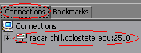
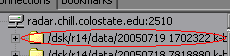
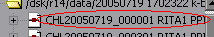
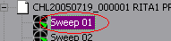
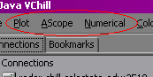

To display data:
- Expand a connection by double-clicking it in the connection list to reveal a list of directories.
- Expand directories corresponding to the date you wish to view to reveal a list of files.
- Expand the file corresponding to the time you wish to view to reveal a list of sweeps. File names appearing in boldface type after having been expanded indicate the pressence of a calibration file on the server. This calibration information is automatically used to adjust the data for better viewing.
- Select the sweep you wish to view. Any open data windows for which data is available will now display that sweep, and the window menus will update to reflect the data types available.
- Open one or more display windows by selecting the option(s) corresponding to the data type(s) you wish to view from the three window menus (Plot, AScope, and Numerical) depending on how you want the data displayed.
If you want to view additional data, repeat steps 1-4. It is not necessary to close and reopen windows if you want to view the same data type.